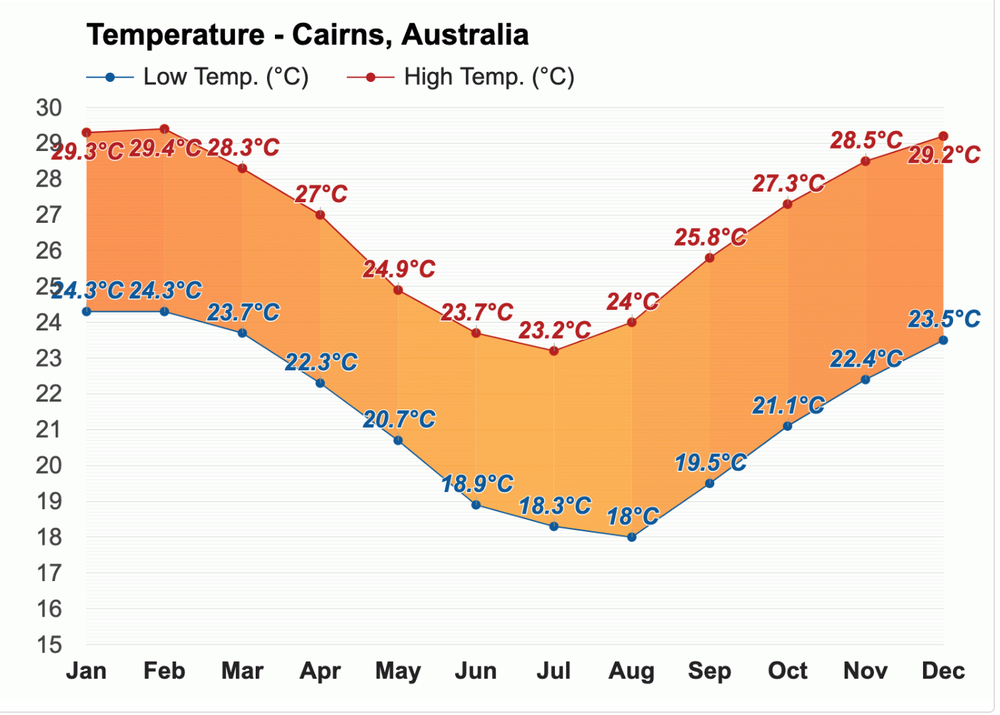

Temperature 
In April, the average heat index (a.k.a. 'felt air temperature',
'apparent temperature'), which represents the influence of relative
humidity on air temperature, is appraised at 30°C (86°F).
With an average high-temperature of 23.2°C (73.8°F) and an average
low-temperature of 18.3°C (64.9°F), July is the coldest month in
Cairns, Australia.

With an average of 9.8h of sunshine, December has the most sunshine
of the year.The months with the least sunshine in Melbourne are July
and August, with an average of 6.5h of sunshine.
Rain
Wind
* The above information is sourced from Weather-At. Take a
visit for
more information...
Population
169,312 (City)
Median Age 39
Ancestry
The most common ancestries in Cairns were Australian 25.6%,
English 24.9%, Irish 8.3%, Scottish 6.8% and Italian 4.4%.
Country of birth
In Cairns, 70.8% of people were born in Australia. The most common
countries of birth were England 3.7%, New Zealand 2.7%, Papua New
Guinea 1.1%, Philippines 1.0% and India 0.9%.
Religion
In Cairns, Christianity was the largest religious group reported
overall (60.9%).
The most common responses for religion in Cairns were No Religion,
so described 30.2%, Catholic 23.3%, Anglican 14.4%, Not stated
12.2% and Uniting Church 4.0%.
* The above information is sourced from
Australian Bureau of Statitics. Take a visit for
more information...
Skate and BMX
Over the last 20 years there has been a significant growth in the
interest and participation of action sports such as skateboarding
and BMX.
Albury Skate Park
Thurgoona Skate Park
Springdale Heights Pump Track
Boat ramps
There are five boat ramps in the Albury region, with access to
either the Murray River or Lake Hume. All ramps offer easy access to
the water as well as nearby services.
Lake Hume Village Boat Ramp
Kremur Street
Mungabareena Reserve
Walking and cycling trails
Albury has more than 50 kilometres of interlinked on and off-road
trails, offering walkers and cyclists of all ages, safe and
enjoyable access to our natural environment and places of interest.
Heritage Walk
Nail Can Hill / Ridge Trail
Bungambrawatha Creek Trail
Rainforest Walk
* The above information is sourced from
Albury City Government. Take a visit for
more information...